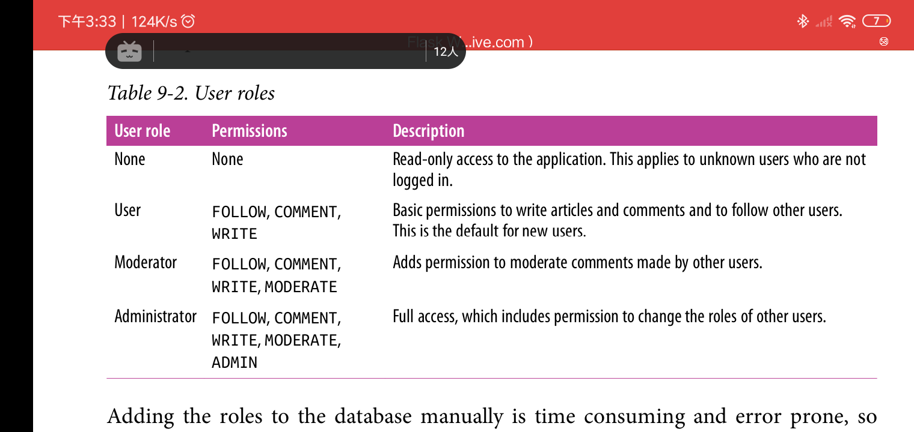

Chapter 9: User Roles
Overview
html应用的用户大多数是有阶级的。一款应用会存在一些特权用户，其角色是维护app.管理员是一个例子(最高等级用户)。而app内容操作员属于中级用户。本例通过向User模型添加role字段来实现用户角色的功能。
在一个app里有多种方式来实现角色的功能。最好的实现依赖于app支持多少角色以及这些角色有多复杂。例如，一个简单的app,可能只存在两个角色: 一个是普通用户角色，另一个是管理员角色。在本例中，向User模型添加is_administrator字段是必须的。一个更复杂的app可能需要拥有不同权限的额外角色，这些权限介于普通用户具有的权限和管理员的权限之间。而在一些app中，使用角色可能没多大意义，而是声明一组权限，用户可以动态的申请权限或者禁用已有的权限。
本例中用户模型采用具体角色分级以及声明权限组的方式实现。本app用户除了拥有具体的角色外，还拥有一列用户模型指定的权限组。
Database Representation of Roles
在第5章中使用了一个简单的roles数据库表用来阐述一对多关系。以下是新版本的Role模型:
# app/models.py: role database model
class Role(db.Model):
__tablename = 'roles'
id = db.Column(db.Integer, primary_key=True)
name = db.Column(db.String(64), unique=True)
default = db.Column(db.Boolean, default=False, index=True) # 该字段指定一个用户注册后的默认角色是什么
permissions = db.Column(db.Integer) # 使用一个字节整数，通过位移等操作来保存和提取角色数据
users = db.relationship('User', backref='role', lazy='dynamic')
# 初始化permissions字段
def __init__(self, **kwargs):
super(Role, self).__init__(**kwargs)
if self.permissions is None:
self.permissions = 0
default字段用于指定新用户的初始角色。在定义的所有角色中，只允许一个角色的 default值为True,其他角色的必须为False.指定了default为True的角色会在新用户注册后赋给这个新用户。因为app会在roles表中搜索default为True的角色，因此添加index=True选项是必须的，其可提高搜索速度。
而permissions字段，使用一个数字来定义角色拥有的权限组，这种方式紧凑，节省代码量。因为SQLAlchemy默认设置字段的默认值为None,因此，如果Role构造器中没有提供permissions的初始值的话，其会在__init__()中获得默认的初始值。
对于权限可以执行的具体任务，这取决于app.以下是本app的权限任务映射表:

之所以permission值基于2的指数形式，是因为其允许使用一个2的指数值来表示多个权限的组合体。而permissions字段的每一个值对应一个不重复的权限组合体。例如，某角色有以下权限: follow other user和conmment on posts权限，其对应的permissisons字段的值是: Follow + COMMENT = 3。这是一种十分高效的存储角色权限组的方式。
以下是权限常量类的定义:
# app/models.py: permission constants class Permission: FOLLOW = 1 COMMENT = 2 WRITE = 4 MODERATE = 8 ADMIN = 16
一旦权限常量就位，就可以向Role表添加管理权限组的方法了:
# app/models.py: permissions management in Role model class Role(db.Model): #.. def add_permission(self, perm): if not self.has_permission(perm): # 单个权限 self.permissions += perm def remove_permission(self, perm): if self.has_permission(perm): self.permissions -= perm def reset_permissions(self): self.permissions = 0 def has_permission(self, perm): return self.permissions & perm == perm # 过滤
add_permission(), remove_permission(), reset_permissions()使用最基本的算术操作来更新权限组。而has_permission()相对比较复杂，其使用按位操作和&操作来检测一个代表权限组的值是否包含某个指定的基础权限。以下是shell会话下，这些方法的使用:
(venv) $ flask shell >>> r = Role(name='User') >>> r.add_permission(Permission.Follow) >>> r.add_permission(Permission.WRITE) >>> r.has_permission(Permission.FOLLOW) True >>> r.has_permission(Permission.ADMIN) False >>> r.reset_permissions() >>> r.permissions 0
以下是各角色定义的权限组:

每次shell会话都需要手动添加定义的各角色，不仅耗费时间而且容易出错，而向Role表添加一个专门处理该任务的方法不失为一个好措施。这使得在单元测试期间，可以很容易都地重建正确的角色对象以及权限类。这种方便性在产品部署后，更显得重要。以下是该方法的实现:
# app/models.py: creating roles in the database
class Role(db.Model):
#...
@staticmethod
def insert_roles():
roles = {
'User': [Permission.FOLLOW, Permission.COMMENT, Permission.Write],
'Moderate': [Permission.FOLLOW, Permission.COMMENT, Permission.WRITE, Permission.MODERATE],
'Administrator': [Permission.FOLLOW, Permission.COMMENT, Permission.WRITE, Permission.MODERATE, Permission.ADMIN],
}
default_role = 'User'
for r in roles:
role = Role.query.filter_by(name=r).first()
if role is None:
role = Role(name=r)
role.reset_permissions()
for perm in roles[r]:
role.add_permission(perm)
role.default = (role.name == default_role)
db.session.add(role)
db.session.commit()
insert_roles()方法并不直接创建新的角色。而是先找到数据库中已有的角色，并重置它。只有当数据库缺少必须的角色时才会创建缺失的角色。当未来角色列表需要改变时可以通过其更新。添加新的角色或者改变已存在角色相关联的权限组时，可以通过改变该方法中的roles字典来，而后重新运行方法来实现。注意匿名角色无需保存在数据库中，因为其代表了未知用户，无意义。
insert_roles是静态方法，直接通过类名调用即可。
Role Assignment
在用户注册账户后，即应获得正确的角色。对于大多数用户来说，在注册期间获得角色是User角色，因为User角色被标记为default(字段)。唯一的例外是管理员角色(administrator)需要在一开始就手动添加。该具有管理员角色的用户通过存储在FLASK_ADMIN变量中的邮箱地址来识别。因此，只有具有该代表管理员的邮箱地址在注册期间出现，app随即赋予该用户管理员角色。以下是实现代码:
# app/models.py: defining a default role for users class User(db.Model): #... def __init__(self, **kwargs): super(User, self).__init__(**KWargs) if self.role is None: # 该字段默认初始值为None if self.email == current_app.config['FLASKY_ADMIN']: self.role = Role.query.filter_by(name='Administrator').first() if self.role is None: self.role = Role.query.filter_by(default=True).first() #...
User类构造器首先调用父类的构造器，之后如果该对象还是没有role字段被初始化，子类构造器就会基于邮件地址来给该字段赋予User角色或者Administrator角色。
Role Verification
为了简化角色和权限的实现，可以在User模型中添加一个帮助函数，该函数检测与特定用户关联的角色是否拥有特定的权限。User模型中的实现于在Role中的有略微差别(底层调用Role的判断方法)，以下是代码:
# app/models.py: evaluating whether a user has a given permission from flask_login import UserMixin, AnonimousUserMixin class User(UserMixin, db.Model): #... def can(self, perm): return self.role is not None and self.role.has_permission(perm) def is_administrator(self): return self.can(Permission.ADMIN) class AnonimousUser(AnonimousUserMixin): def can(self, permissions): return False def is_administrator(self): return False login_manager.anonimous_user = AnonimousUser
User表中新添加的方法显而易见，就不翻译了。
出于方便，一个自定义的实现了can()和is_administrator()方法的AnonimousUser类被创建。之所以这么做，是因为当app调用current_user.can()和current_user.is_administrator()时不需要去额外检测当前用户是否登陆。通过指定login_manager.anonimous_user属性来告知flask_login使用自定义的匿名用户类。
为了限制某些视图函数只能被拥有指定权限的用户激活时，可以使用一个自定义的装饰器来实现。以下是检测用户是否具有通用权限和是否为管理员的两个装饰器的实现代码:
# app/decorators.py: custom decorators that check user permissions from functools import wraps from flask import abort from flask_login import current_user from .models import Permission def permission_required(permission): def decorator(f): @wraps(f) def decorated_function(*args, **kwargs): # 预前处理 if not current_user.can(permission): abort(403) return f(*args, **kwargs) return decorated_function return decorator def admin_required(f): return permission_required(Permission.ADMIN)(f)
这些装饰器底层使用python标准库functools库，当当前用户不具有要求的权限时返回403,'Forbidden'http状态码。在chapter 3中创建了404和500错误页面。以下是这些自定义装饰器的使用例子:
# usercase of custom decorator
from .decorators import admin_required, permission_required
@main.route('/admin')
@login_required
@admin_required
def for_admin_only():
return 'for administrator!'
@main.route('/moderate')
@login_required
@permission_required(Permission.MODERATE)
def for_moderators_only():
return 'for comment moderators!'
根据经验，在视图函数的装饰器链式使用中，route装饰器应置于视图函数首位。其他装饰器以它们对视图函数添加效果的顺序摆放(效果从装饰器链的底部逐步网上开始施加)。在这里检测用户是否登陆的装饰器优于权限检测的装饰器。
有时候需要在渲染模版中检测一个用户是否具有指定权限，因此在渲染模版中必须可以访问到Permission类。为了避免在所有视图函数参数列表中都添加Permission参数，可以使用context processor来实现在渲染期间所有模版都可以访问这些自定义的环境变量。(之前学过一个向flask shell中注入变量的shell_context_processor装饰器)。以下是使用:
# app/main/__init__.py: adding the Permission class to the template context @main.app_context_processor def inject_permission(): return dict(Permission=Permission)
新角色和权限可以在单元测试中测试。以下是测试代码。(app_context_processor也能将环境变量注入到脚本中吗?不能)
# tests/test_user_model.py: unit tests for roles and permissions # 在使用app_context_processor情况下，这里可以不用导入Permission吗，必须导入 class UserModelTestCase(unittest.TestCase): #... def test_user_role(self): u = User(email="john@qq.com", password='cat') self.assertTrue(u.can(Permission.FOLLOW)) self.assertTrue(u.can(Permission.COMMENT)) self.assertTrue(u.can(Permission.WRITE)) self.assertFalse(u.can(Permission.MODERATE)) self.assertFalse(u.can(Permission.ADMIN)) def test_anonymous_user(self): u = AnonymousUser() self.assertFalse(u.can(Permission.FOLLOW)) self.assertFalse(u.can(Permission.COMMENT)) self.assertFalse(u.can(Permission.WRITE)) self.assertFalse(u.can(Permission.MODERATE)) self.assertFalse(u.can(Permission.ADMIN))
在进入下一张章之前，得向测试数据库插入新角色:
(venv) $ flask shell >>> Role.insert_roles() >>> Role.query.all() [....]
手动初始化添加新角色之前已经存在的用户的role字段:
(venv) $ flask shell >>> admin_role = User.query.filter_by(name="administrator").first() >>> default_role = User.query.filter_by(default=True).first() >>> for u in User.query.all(): ... if u.role is None: ... if (u.email == app.config['FLASKY_ADMIN']): u.role = admin_role else: u.role = user_role >>> db.session.commit() # 注意这里无需调用db.session.add(u)
现在用户系统趋于完整，下一章使用用户配置功能。